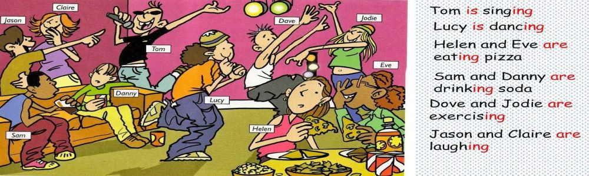
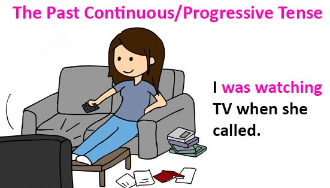
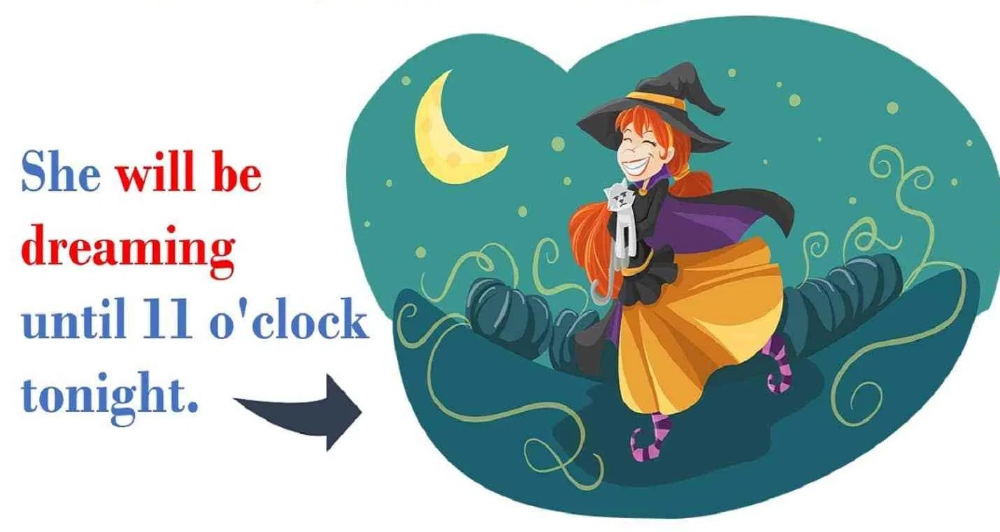
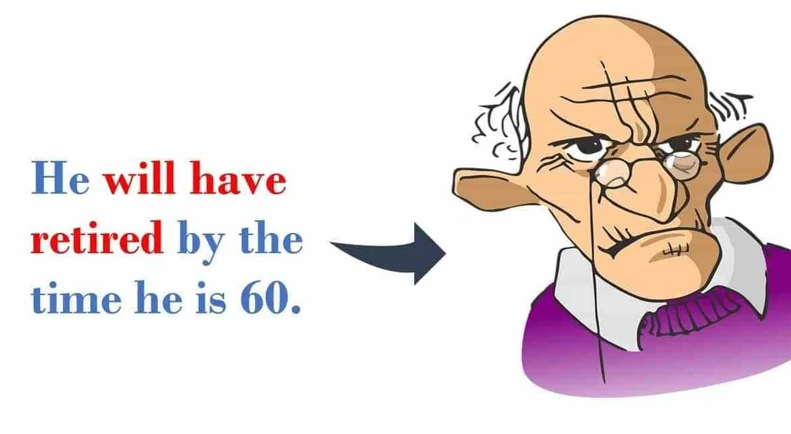
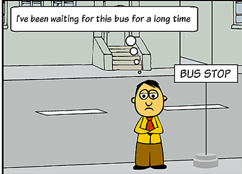

1. TENSES
for more details Click me
|

|
| PAST TENSE | PRESENT TENSE | FUTURE TENSE |
|
|
|
Simple Present Tense
Simple Present Tense with Full Verbs |
Simple Present Tense with BE Verbs |
Uses |
|
|
|
Formula |
|||||
| Plural | Singular | With a noun | With an adjective | with "it" | with "there" |
| Subject + Verb | Subject + Verb + [s] | ||||
| The student goes to school | The students go to school | My mother is a teacher | The children are good | It is windy today | There are 20 girls in the class |
|
|
|

Simple Past Tense
Simple Past Tense with Full Verbs |
Simple Past Tense with BE Verbs |
Uses |
|
|
|
| Regular | Irregular | Singular : was | Plural : were |
| V + ed | V + ___ | was | were |
| ex: kill + ed Hunter Killed a lion |
ex: take He took a book |
I was at home yesterday | My parents were good students |
|
|
|
||
Simple Future Tense
|
|
| will + V[infinitive] | BE + going to + V[infinitive] |
| We will have a concert at the end of this year I will come to class tomorrow I will go out tomorrow |
we are going to have a concert at the end of this year It is going to rain today I am going to enjoy this weekend |
|
|
|
Summary of Simple Tenses
| Simple Past tense | Simple Present tense | Simple Future tense |
| subject + past verb + object | subject + present verb + object | subject + will + present verb(plural) + object |
| The teacher praised the children | The teacher praises the children | The teacher will praise the children |
Present Continuous Tense
|

|
Past Continuous Tense
|

|
|
Future Continuous Tense
|

|
Summary of Continuous Tenses
| Past Continuous Tense | Present Continuous Tense | Future Continuous Tense |
| subject + was/were + present participal + object | subject + is/am/are + present participal + object | subject + will + be + present participal + object |
| The teacher is praising the children | The teacher was praising the children | The teacher will be praising the children |
Present Perfect Tense
Note: In spoken English, It's common to use the contractions:
|

|
Past Perfect Tense

|
|
Future Perfect Tense
|
 |
Summary of Continuous Tenses
| Past perfect tense | Present perfect tense | Future perfect tense |
| subject + had + present participal + object | subject + has/have + present participal + object | subject + will + have + present participal + object |
| The teacher had praised the children | The teacher has praised the children | The teacher will have praised the children |
Present Perfect Continuous Tense
|
 |
Past Perfect Continuous Tense
 |
she had been practicing for weeks before the concert |
Future Perfect Continuous Tense
subject + will have + been + present participle + object We will have been shopping in that market before you come home. |

|
Summary of Perfect Continuous Tenses
| Past perfect continuous tense | Present perfect continuous tense | Future perfect continuous tense |
| subject + had + been + present participal + object | subject + has/have + been + present participal + object | subject + will + have + been + present participal + object |
| The teacher had been praising the children | The teacher has been praising the children | The teacher will have been praising the children |